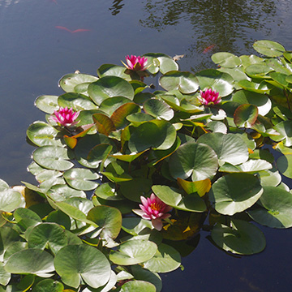

Pink Water Lillies
Pond with Lillies
Hidden Pond
Shrine
White Water Lillies
Garden Walkway
Lilly with Bee
苦苦挖库尅米亚思密达4444444444444444444444444444444 5555555555555555
5555555555555555555555555\r\n /r/n
鼠标风格
千花跟随